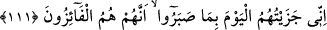

“Zira” durum şu ki “kullarımdan bir zümre:” ki onlar mü’minlerdir, dünyada iken:
“Rabbimiz! Biz iman ettik;” seni ve senin katından gelen her şeyi tasdik ettik, “öyle ise
bizi affet;” günahlarımızı ört, bağışla “bize acı!” nimetlerini bize bahşeyle ki cennete
nail olmak ve cehennemden kurtulmak da bu cümledendir. “Sen, merhametlilerin en
iyisisin!” Çünkü senin rahmetin her rahmetin kaynağıdır. “demişlerdi.”
110. İşte siz onları alaya aldınız; sonunda onlar (ile alay etmeniz) size beni
yâdetmeyi unutturdu, siz onlara gülüyordunuz.
“İşte siz onları alaya aldınız;” yâni “Rabbimiz …” diye duâ etmeyi bırakıp susun.
Çünkü siz “Rabbimiz! Biz iman ettik…” diyerek duâ edenlerle alay ediyor ve bunu iş
ediyor uğraşıp duruyordunuz.
“Sonunda onlar” ile alay etmeniz “size beni yâdetmeyi” yâni onlarla alay etmekle
aşırı meşgul olmanız size beni zikretmeyi, benden korkmayı ve bana itâat için amel
etmeyi “unutturdu,”
“Siz onlara gülüyordunuz.” Bu durum alay etmenin en son safhasıdır.
Mukâtil der ki: “Bu âyet sahâbenin fakirlerinden Hz. Bilal, Ammar, Selman, Suheyb
ve benzerleri hakkında nâzil olmuştur. Ebû Cehil, Utbe, Übey b. Halef ve benzeri
Kureyş kâfirleri onlarla ve müslümanlıklarıyla alay ederler ve onlara eziyette
bulunurlardı.
111. Bugün ben onlara, sabrettiklerinin karşılığını verdim; onlar, hakikaten
muratlarına erenlerdir.
“Bugün ben onlara, sabrettiklerinin karşılığını verdim” onların eziyetlerine
sabretmeleri
sebebiyle
onları
mükâfâtlandırdım.
Sabır,
nefsi
şehvetlerinden/isteklerinden hapsedip alıkoymaktır.
“Onlar, hakikaten muratlarına erenlerdir.” Yâni ben kendilerine mahsus olarak
onları tüm isteklerine ermeleriyle mükâfâtlandırdım.
et-Te’vîlâtü’n-Necmiyye’de şöyle der: “Burada bâzı latîfeler vardır. Saâdet ehli,
Allah ile olan sâlih muâmelelerinden dolayı Allah’tan fayda elde ettikleri gibi,
kendilerini inkâr edenlerin inkârı ve alay edenlerin hafife almaları yoluyla da istifâde
ederler. Şakavet ehli ise yaptıkları fâsid muâmelelerle kendilerine yazık ettikleri gibi,